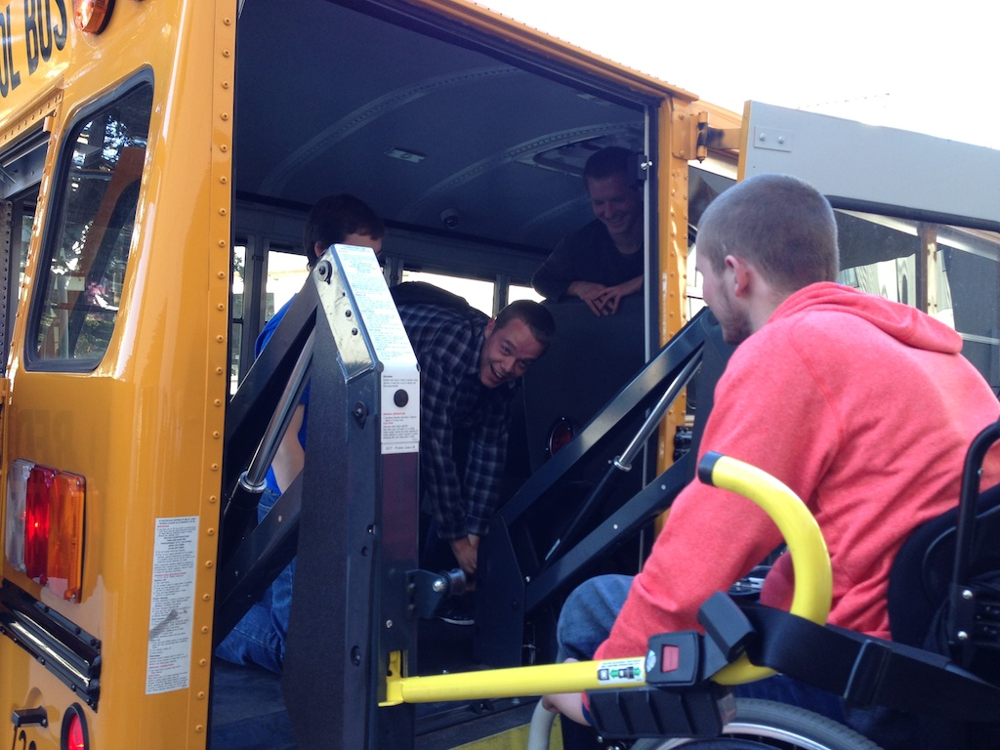

Transportation Cogitation
This is a post I've been thinking about for a few days. Its a serious post, but especially after today, its surrounded in humor. Here's the problem, to me this is funny, but if you had to live with it every day of your life, it might not be funny.
My thinking about this goes all the way back to the first day of JTerm, when we walked, and walked, and walked... through miles of parking garage to get to the light rail that would take us downtown. When we arrived downtown, most of us could easily take the escalator conveniently up to street level. Where we hunted around for the elevator for the rest of the group. It turns out the elevator is never in a location that is convenient or close to the escalators.
The next day, I led the group into a coffee shop (not a Starbucks) that our host had recommended. I popped in, looked around, and quickly realized that we couldn't stay, not only couldn't we stay we couldn't all get in the coffee shop. Stairs only, no ramp.
On the positive side, the Seattle bus drivers were all extremely knowledgeable and courteous. They were able to quickly help get everyone on the bus, and locked into place for a safe ride, without one word of complaint.
The train ride from Seattle to San Francisco was 23 hours. It was uncomfortable for most of us, especially when trying to sleep, but it had to be sheer torture for someone who couldn't get out of their chair for the entire time. Things started to get humorous when we got on the bus outside the Amtrak station. It was like the driver had no idea how to operate the wheelchair lift! Hey lets just press some of these buttons and see what happens. Never mind, the picture diagram of what to do that was posted right there.
When we needed to use the super shuttle to go from San Francisco to Menlo Park, things got a lot worse. First, the super shuttle has yet to be on time. Second, even though we ordered an accessible van, the drivers once again clearly had no idea how to make it work. Luckily by this time our own guys had figured out the general principles of a lift and were able to quickly give useful advice. The real shocker was our bus from First Student. All jokes about being on the short bus aside, it blew me away that the driver showed up with a non-functional lift. He said the battery was dead, but that didn't stop him from randomly pressing buttons while our crew figured out how to operate the lift manually.

Its been an interesting process of learning and discovery on our travels, learning to look for ramps and elevators. Learning to avoid crappy rocky roads whenever possible, and generally feeling a small part of the pain of a comrade that has to put up with this stuff every day.
Comments